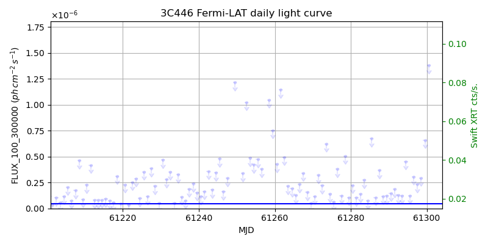
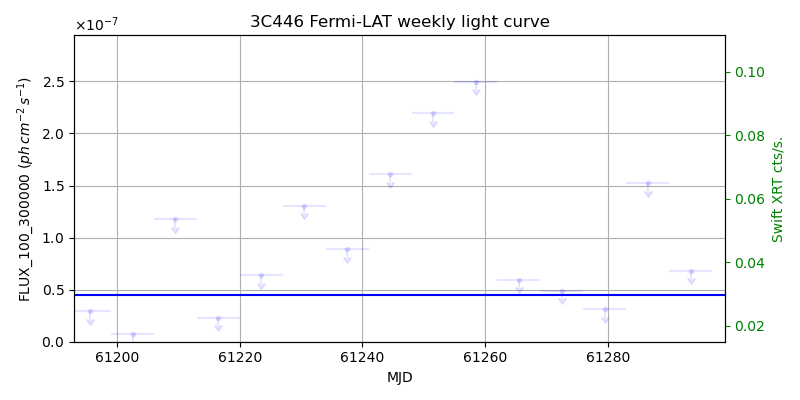
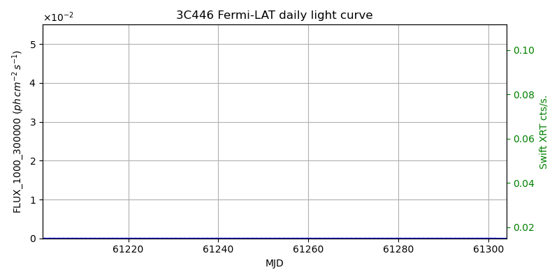
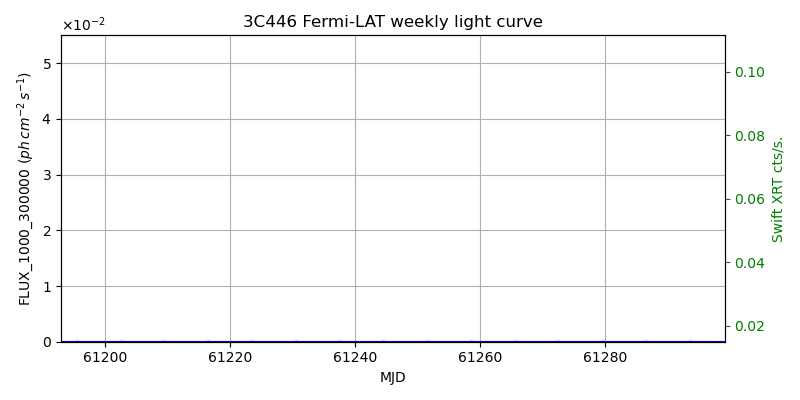

LAT Lightcurve site: https://fermi.gsfc.nasa.gov/ssc/data/access/lat/msl_lc/source/3C_446
Swift site: https://www.swift.psu.edu/monitoring/source.php?source=3C446
NED: Query
Time of last update of this page: UT: 2026-09-19 15:29 (MJD: 61302.645)
| Property | Value |
|---|---|
| R.A. | 22:25:47.28 |
| Dec. | -4:57:00.0 |
| z | 1.404 |
| 3FGL SpectrumType | PowerLaw |
| 3FGL PL Index | 2.36 |
| 3FGL Flux_100_300000 | 4.44e-08 1 / (s cm2) |
| 3FGL Flux_1000_300000 | 1.95e-09 1 / (s cm2) |
| 3FGL Flux >200 GeV | 1.45e-12 1 / (s cm2) |
| 3FGL Extrap. Crab >200 GeV | 0.01 |
| 3FGL Flux After EBL Absorption >200GeV | 3.92e-15 1 / (s cm2) |
| 3FGL EBL Crab Fraction >200GeV | 0.00 |

| MJD | dMJD | Flux | dFlux | Frac3FGL | FracCrab>200GeV | EBLFracCrab>200GeV |
|---|---|---|---|---|---|---|
| 61297.50 | 0.50 | 2.31e-07 | 0.00e+00 | 0.00 | 0.00 | 0.00 |
| 61298.50 | 0.50 | 2.94e-07 | 0.00e+00 | 0.00 | 0.00 | 0.00 |
| 61299.50 | 0.50 | 6.58e-07 | 0.00e+00 | 0.00 | 0.00 | 0.00 |
| 61300.50 | 0.50 | 1.38e-06 | 0.00e+00 | 0.00 | 0.00 | 0.00 |
| 61301.50 | 0.50 | 3.40e-06 | 0.00e+00 | 0.00 | 0.00 | 0.00 |

| MJD | dMJD | Flux | dFlux | Frac3FGL | FracCrab>200GeV | EBLFracCrab>200GeV |
|---|---|---|---|---|---|---|
| 61265.50 | 3.50 | 5.96e-08 | 0.00e+00 | 0.00 | 0.00 | 0.00 |
| 61272.50 | 3.50 | 4.91e-08 | 0.00e+00 | 0.00 | 0.00 | 0.00 |
| 61279.50 | 3.50 | 3.10e-08 | 0.00e+00 | 0.00 | 0.00 | 0.00 |
| 61286.50 | 3.50 | 1.52e-07 | 0.00e+00 | 0.00 | 0.00 | 0.00 |
| 61293.50 | 3.50 | 6.83e-08 | 0.00e+00 | 0.00 | 0.00 | 0.00 |

| MJD | dMJD | Flux | dFlux | Frac3FGL | FracCrab>200GeV | EBLFracCrab>200GeV |
|---|---|---|---|---|---|---|
| 61297.50 | 0.50 | 5.36e-08 | 0.00e+00 | 0.00 | 0.00 | 0.00 |
| 61298.50 | 0.50 | 2.14e-08 | 0.00e+00 | 0.00 | 0.00 | 0.00 |
| 61299.50 | 0.50 | 3.71e-07 | 0.00e+00 | 0.00 | 0.00 | 0.00 |
| 61300.50 | 0.50 | 4.72e-07 | 0.00e+00 | 0.00 | 0.00 | 0.00 |
| 61301.50 | 0.50 | 3.43e-07 | 0.00e+00 | 0.00 | 0.00 | 0.00 |

| MJD | dMJD | Flux | dFlux | Frac3FGL | FracCrab>200GeV | EBLFracCrab>200GeV |
|---|---|---|---|---|---|---|
| 61265.50 | 3.50 | 8.73e-09 | 0.00e+00 | 0.00 | 0.00 | 0.00 |
| 61272.50 | 3.50 | 6.30e-09 | 0.00e+00 | 0.00 | 0.00 | 0.00 |
| 61279.50 | 3.50 | 3.15e-09 | 0.00e+00 | 0.00 | 0.00 | 0.00 |
| 61286.50 | 3.50 | 4.29e-09 | 0.00e+00 | 0.00 | 0.00 | 0.00 |
| 61293.50 | 3.50 | 2.63e-09 | 0.00e+00 | 0.00 | 0.00 | 0.00 |
--------------------------------------------------------- Using user-supplied coords: 22:25:47.28 -4:57:00.0 2000 --------------------------------------------------------- FLWO UT night of: 2026-09-20 Local Sid. @ Midnight: 23:32 Sunset (-15.0) (local, UT): 19:31 02:31 Sunrise (-15.0) (local, UT): 05:04 12:04 Moonrise (local, UT): Moonset (local, UT): 00:13 07:13 Moon phase: 0.64 --------------------------------------------------------- AzTime LSID UT Obj_el Obj_az Mn_el Mn_az Sep. --------------------------------------------------------- 19:31 19:03 02:31 29.4 117.4 30.5 184.0 56.9 20:01 19:33 03:01 34.9 123.4 29.7 191.5 56.7 20:31 20:03 03:31 40.0 130.3 28.1 198.7 56.6 21:01 20:33 04:01 44.6 138.3 25.8 205.5 56.4 21:31 21:03 04:31 48.5 147.6 22.9 211.9 56.2 22:01 21:33 05:01 51.4 158.4 19.4 217.8 56.1 22:31 22:03 05:31 53.1 170.3 15.4 223.2 55.9 23:01 22:33 06:01 53.5 182.8 11.0 228.1 55.7 23:31 23:04 06:31 52.5 195.2 6.3 232.6 55.5 00:01 23:34 07:01 50.2 206.6 1.5 236.7 55.3 00:31 00:04 07:31 46.8 216.7 -2.6 240.5 55.0 01:01 00:34 08:01 42.6 225.5 -9.5 244.1 54.8 01:31 01:04 08:31 37.8 232.9 -15.1 247.4 54.5 02:01 01:34 09:01 32.5 239.4 -20.8 250.6 54.3 02:31 02:04 09:31 26.8 245.1 -26.6 253.6 54.0 03:01 02:34 10:01 20.9 250.1 -32.5 256.6 53.7 03:31 03:04 10:31 14.8 254.7 -38.4 259.6 53.4 04:01 03:34 11:01 8.6 258.9 -44.5 262.6 53.1 04:31 04:04 11:31 2.5 263.0 -50.5 265.8 52.8 05:01 04:34 12:01 -2.7 266.9 -56.6 269.4 52.5 05:04 04:37 12:04 -3.7 267.3 -57.1 269.7 52.4 --------------------------------------------------------- Source never above horizon of 55.0 deg. Dark hours >55 deg.: 0.00